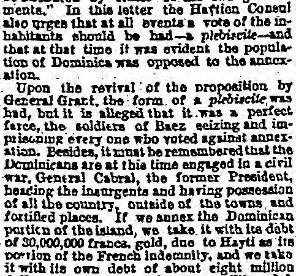

Article in transcriptionArtículo en transcripción
Chicago Tribune. Chicago, Ill., December 15, 1870. Page 2. Published by Tribune Co. A daily newspaper, 1864–1872.Chicago Tribune. Chicago, Ill., 15 de diciembre de 1870. Página 2. Publicado por Tribune Co. Periódico diario, 1864–1872. View the originalVer el original

The Chicago Tribune reported that the population of Dominica was originally opposed to annexation, and that a subsequent plebiscite revived by General Grant was a "perfect farce" in which Baez's soldiers seized and imprisoned anyone who voted against it. The newspaper noted that the Dominican Republic was engaged in a civil war with insurgents led by former President General Cabral controlling the countryside, and that annexation would saddle the United States with roughly fourteen million dollars in debt, including a 30,000,000-franc gold debt owed to Hayti.El Chicago Tribune reportó que el pueblo dominicano se opuso originariamente a la anexión y que el subsiguiente plebiscito auspiciado por el general Grant constituyó una «farsa absoluta» en la que la tropa de Báez arrestó y encarceló a todo aquel que sufragase en contra. El rotativo hizo notar que la República Dominicana se hallaba inmersa en una guerra civil donde los insurrectos capitaneados por el expresidente general Cabral dominaban las zonas rurales, y que la anexión cargaría a los Estados Unidos con una deuda aproximada de catorce millones de dólares, incluidos 30.000.000 de francos en oro adeudados a Haití.
FULL TEXT:TEXTO COMPLETO:
Chicago Tribune December 15, 187015 de diciembre de 1870
Original in English.Original en inglés.
WASHINGTON. Annexation of San Domingo, and the Authors of the Scheme. General Babcock Warned Against General Cazeneau. How General Cazeneau Made Himself Generally Useful. Pre-emption Claims on the Bay of Samana. Senator Sumner's Resolution Explained.WASHINGTON. La anexión de Santo Domingo y los autores del plan. Se previene al general Babcock contra el general Cazeneau. De qué modo el general Cazeneau se hizo generalmente útil. Reclamaciones de derecho de tanteo sobre la bahía de Samaná. Explicación de la resolución del senador Sumner.
[FROM AN OCCASIONAL CORRESPONDENT.][DE UN CORRESPONSAL OCASIONAL.]
WASHINGTON, Dec. 10.WASHINGTON, 10 de diciembre.
The singular pertinacity with which the President insists upon the annexation of the Dominican portion of the Island of San Domingo—for, although the message speaks of the annexation of the whole Island, it can scarcely be possible the President means to swallow up the Haytian portion of it without at all consulting the Haytian Government—has brought the question again before the country, and this time, it is believed, the plan hit upon will not fail. General Benjamin F. Butler, the Presidential organ in the House, will introduce the annexation resolutions next week; and, as a bare majority of each house will be sufficient, it is supposed the effort will be crowned with success.La singular pertinacia con que el Presidente insiste en la anexión de la parte dominicana de la isla de Santo Domingo —pues, aunque el mensaje habla de la anexión de toda la isla, apenas es posible que el Presidente pretenda engullir la parte haitiana de ella sin consultar en absoluto al Gobierno haitiano— ha colocado de nuevo la cuestión ante el país, y esta vez, según se cree, el plan ideado no fracasará. El general Benjamin F. Butler, el portavoz presidencial en la Cámara de Representantes, presentará las resoluciones de anexión la próxima semana; y, como bastará una simple mayoría de cada cámara, se supone que el esfuerzo se verá coronado por el éxito.
It must not, however, be assumed that the opponents of the measure in the Senate will not make a struggle, as well because of the want of merit of the proposition itself, as because of the blow the procedure inflicts upon the Senate in its executive capacity. I have little faith, however, in the efforts of the opposition, pitted, as they are, against the extraordinary personal exertion which the President is making. More as a matter of record, therefore, than with any expectation that Congress will resist the blandishments or the powers of the Executive, the following history of the matter is briefly given:No debe suponerse, sin embargo, que los opositores a la medida en el Senado no darán la batalla, tanto por la falta de mérito de la propuesta en sí misma como por el golpe que el procedimiento asesta al Senado en su capacidad ejecutiva. Tengo poca fe, no obstante, en los esfuerzos de la oposición, enfrentados como están al extraordinario empeño personal que despliega el Presidente. Por tanto, más para que quede constancia que con la esperanza de que el Congreso resista los halagos o los poderes del Ejecutivo, se ofrece brevemente la siguiente relación de los hechos:
For more than twenty years Washington has been periodically visited by a certain General Cazeneau and his clever wife, who, under the nom de plume of "Flora Montgomery," was a contributor to the Democratic Review in John L. O'Sullivan's time, and to the Democratic press generally. The particular hobby of Mr. and Mrs. Cazeneau was the annexation of the Dominican portion of San Domingo, where they had resided under Pierce's administration in some sort of official capacity, Cazeneau having been sent to the island by both Pierce and Buchanan as a sort of combined consul and secret agent. During the rebellion Washington missed the Cazeneaus, who were then busy paying court to Jeff. Davis and his government at Richmond, where they enjoyed a high measure of favor from their activity in the "lost cause." Shortly after the collapse of the Confederacy, we again heard of the Cazeneaus working away in San Domingo, and making propositions to Mr. Seward looking to the fulfilment of their favorite scheme of annexation. The matter fell through at that time, and was again revived upon General Grant's accession to office. The result was the drawing up of a convention under the auspices of General Babcock, one of the President's young military Secretaries, with the aid of Admiral Porter, as wet nurse, and the valuable assistance of Cazeneau as interpreter. That treaty was presented to the Senate last session, and, as your readers know, came to grief by the aid of Mr. Sumner's opposition—the treaty receiving just one-half the votes of the Senate, whilst two-thirds was requisite.Durante más de veinte años, Washington ha recibido las visitas periódicas de un tal general Cazeneau y de su hábil esposa, quien, bajo el seudónimo de «Flora Montgomery», colaboraba en la Democratic Review en tiempos de John L. O'Sullivan y en la prensa demócrata en general. La manía particular del Sr. y la Sra. Cazeneau era la anexión de la parte dominicana de Santo Domingo, donde habían residido bajo la administración de Pierce en cierta condición oficial, habiendo sido enviado Cazeneau a la isla tanto por Pierce como por Buchanan en calidad de una suerte de cónsul y agente secreto combinado. Durante la rebelión, Washington echó de menos a los Cazeneau, que por entonces estaban ocupados rindiendo pleitesía a Jeff. Davis y a su gobierno en Richmond, donde gozaban de gran favor debido a su actividad en la «causa perdida». Poco después del colapso de la Confederación, volvimos a oír que los Cazeneau operaban en Santo Domingo y presentaban propuestas al Sr. Seward encaminadas a la consumación de su plan favorito de anexión. El asunto fracasó en aquel momento y se reactivó con la llegada del general Grant al poder. El resultado fue la redacción de una convención bajo los auspicios del general Babcock, uno de los jóvenes secretarios militares del Presidente, con la ayuda del almirante Porter en calidad de nodriza y la valiosa asistencia de Cazeneau como intérprete. Dicho tratado fue presentado al Senado en la última sesión y, como saben sus lectores, fracasó gracias a la oposición del Sr. Sumner, habiendo recibido el tratado justamente la mitad de los votos del Senado, cuando se requerían dos tercios.
Thus far I have only stated what is generally known. Now for details. When Mr. Fish gave General Babcock his instructions to visit Baez, the President of the Dominican Republic, he particularly warned him against having anything to do with Cazeneau, as a dangerous man, mixed up in his private schemes and speculations, and who only wanted to make a cat's-paw of the United States, so as to realize on the vast concessions of lands in the Bay of Samana and elsewhere which it was known with certainty he had secured. Thus warned, Babcock was sent down, like a good boy, with a bag full of gold from the secret service fund of the State Department, to treat with Baez, and to avoid the naughty but clever Cazeneau. I have no reason to doubt but that Babcock left Washington a good and virtuous young man. He may have been seasick, and his bowels troubled, but, assuredly, his conscience was at rest, although his dreams may have been disturbed with visions of the astute and diplomatic Cazeneau, against whose wiles and interference Mr. Fish had warned him. But, alas, on reaching the island and seeking Baez, an unlooked-for difficulty arose. Baez could speak no English, Babcock was all in the dark as regarded Spanish. Like Tom Hood's English soldier in Paris, after Waterloo, Babcock was astonished to find the ignorance of Baez in not understanding the American tongue, while his surprise was great to hear even the little children speaking Spanish. In this emergency the inevitable Cazeneau put in an appearance, and, being equally conversant with the Spanish and the English, proffered his services as interpreter, and they were gladly accepted—all Mr. Fish's warnings to the contrary notwithstanding.Hasta aquí solo he expuesto lo que se sabe de manera general. Pasemos ahora a los detalles. Cuando el Sr. Fish dio al general Babcock sus instrucciones para visitar a Báez, el presidente de la República Dominicana, le advirtió de manera particular que no tuviera nada que ver con Cazeneau, por ser un hombre peligroso, enredado en sus planes y especulaciones privadas, y que solo pretendía servirse de los Estados Unidos como instrumento para sacar provecho de las vastas concesiones de tierras en la bahía de Samaná y en otros lugares que se sabía con certeza que había obtenido. Advertido de este modo, Babcock fue enviado, como un muchacho obediente, con una bolsa llena de oro del fondo para servicios secretos del Departamento de Estado, para tratar con Báez y evitar al travieso pero ingenioso Cazeneau. No tengo motivos para dudar de que Babcock salió de Washington siendo un joven bueno y virtuoso. Pudo haber padecido mareos en el mar y desarreglos en las entrañas, pero, con certeza, su conciencia estaba tranquila, aunque sus sueños pudieran haberse visto perturbados por visiones del astuto y diplomático Cazeneau, contra cuyas artimañas e intromisiones le había prevenido el Sr. Fish. Mas, ¡ay!, al llegar a la isla y buscar a Báez, surgió una dificultad imprevista. Báez no sabía hablar inglés; Babcock estaba completamente a oscuras en lo tocante al español. Al igual que el soldado inglés de Tom Hood en París tras Waterloo, Babcock quedó atónito ante la ignorancia de Báez al no comprender la lengua americana, mientras que su sorpresa fue mayúscula al oír incluso a los niños pequeños hablar español. Ante tal apuro, el inevitable Cazeneau hizo acto de presencia y, dominando por igual el español y el inglés, ofreció sus servicios como intérprete, y estos fueron aceptados con agrado, a pesar de todas las advertencias en contra del Sr. Fish.
Behold, then, the unsophisticated young warrior, Babcock, in the hands of two such experts as Cazeneau and Baez, and wonder no longer at the result. In all the interviews between Babcock and Baez—the busy B's—Cazeneau did the translating. What he told to Baez as Babcock's speech, Heaven, Cazeneau, and Baez only know; for certainly Babcock didn't; and equally ignorant was the American military "gent" as to what reply the hybrid San Dominican vouchsafed. Cazeneau was master of the situation, and said what he liked. One thing is certain, however, Babcock liked the looks of the place—of the Bay of Samana especially—and American naval officers here, who have visited the bay, assert that he has entered pre-emption claims for large blocks of land surrounding that magnificent water, and that they are now duly labeled, "Babcock," "Porter," "David A. Porter," "Grant," etc. It would be uncharitable to suppose that all this land is not to be paid for by the parties whose names now figure on the signboards affixed to the property in question, after the annexation is accomplished, and I therefore disdain any injurious reflections while mentioning an undoubted and indisputable fact, vouched for by respectable naval officers.Contémplese, pues, al cándido joven guerrero, Babcock, en manos de dos expertos tales como Cazeneau y Báez, y no cause ya asombro el resultado. En todas las entrevistas entre Babcock y Báez —las hacendosas B—, Cazeneau se encargó de la traducción. Lo que este refirió a Báez como palabras de Babcock, solo el Cielo, Cazeneau y Báez lo saben; pues ciertamente Babcock no lo sabía; y con igual ignorancia quedó el «caballero» militar americano respecto a qué respuesta se dignaba dar el híbrido dominicano. Cazeneau era el dueño de la situación y decía lo que le placía. Algo es seguro, no obstante: a Babcock le agradó el aspecto del lugar —en especial el de la bahía de Samaná—, y oficiales navales estadounidenses que se encuentran aquí, y que han visitado la bahía, afirman que ha registrado reclamaciones de derecho de tanteo sobre grandes parcelas de tierra que rodean esa magnífica masa de agua, y que ahora se hallan debidamente rotuladas como «Babcock», «Porter», «David A. Porter», «Grant», etc. Sería poco caritativo suponer que toda esta tierra no ha de ser pagada por las partes cuyos nombres figuran ahora en los letreros fijados a la propiedad en cuestión una vez consumada la anexión, y por ello desdeño cualquier reflexión injuriosa al mencionar un hecho indudable e indiscutible, respaldado por respetables oficiales navales.
But all this is of secondary importance. There are questions underlying any mere consideration as to the manner in which this annexation job has been worked at, or the individuals, if any there be, who are pecuniarily interested in it. And, in this connection, Mr. Sumner's resolution of inquiry is exceedingly suggestive, as a little explanation will suffice to show. That resolution reads:Pero todo esto es de importancia secundaria. Hay cuestiones que subyacen a cualquier mera consideración sobre el modo en que se ha tramado este negocio de la anexión, o sobre los individuos que, si es que los hay, tengan un interés pecuniario en él. Y, a este respecto, la resolución indagatoria del Sr. Sumner es sobremanera sugerente, como bastará una breve explicación para demostrarlo. Dicha resolución reza así:
"Resolved, That the President of the United States be requested to communicate to the Senate (if, in his opinion, not incompatible with the public interests) copies of all papers and correspondence relating to the proposed annexation of the Dominican portion of the island of San Domingo, or the purchase of any part thereof, including the original and all subsequent instructions to any agent or Consul of the United States, with the correspondence of such agent or Consul; also, any protocol or convention signed by such agent or Consul; also, an account of the debt and liabilities of the Dominican Government, especially its obligations to the neighboring Republic of Hayti; also the provisions of the existing Constitution of Dominica, so far as the same relate to the sale or transfer of the national domain; also any treaty with Hayti or France by which Dominica is affected; also, any communication from the neighboring Republic of Hayti or from our Minister there relating to the proposed annexation; also, instructions to the commander of our naval squadron in the waters of the island since the commencement of the late negotiations, with the reports and correspondence of such commander; also, any information tending to show what European power, if any, proposes to acquire jurisdiction of any part of the island, and if so, of what part; also, any information as to the position of President Baez, under whom the treaty of annexation was negotiated, and the extent to which he has been maintained in power by the presence of United States vessels-of-war; also, any information with regard to the sentiments of the people in Dominica, and the reported pendency there of civil war; also, any information with regard to any claim of jurisdiction by the Republic of Hayti over the territory of Dominica."«Se resuelve: Que se solicite al Presidente de los Estados Unidos que comunique al Senado (si, a su juicio, no es incompatible con los intereses públicos) copias de todos los documentos y correspondencia relativos a la proyectada anexión de la parte dominicana de la isla de Santo Domingo, o a la compra de cualquier parte de la misma, incluidas las instrucciones originales y todas las posteriores a cualquier agente o cónsul de los Estados Unidos, junto con la correspondencia de dicho agente o cónsul; asimismo, cualquier protocolo o convención firmados por dicho agente o cónsul; asimismo, un estado de la deuda y las obligaciones del Gobierno dominicano, en especial sus compromisos con la vecina República de Haití; asimismo, las disposiciones de la Constitución vigente de Dominica en la medida en que se refieran a la venta o cesión del dominio nacional; asimismo, cualquier tratado con Haití o Francia que afecte a Dominica; asimismo, cualquier comunicación de la vecina República de Haití o de nuestro ministro allí relativa a la propuesta anexión; asimismo, las instrucciones impartidas al comandante de nuestra escuadra naval en las aguas de la isla desde el inicio de las recientes negociaciones, junto con los informes y la correspondencia de dicho comandante; asimismo, cualquier información que tienda a mostrar qué potencia europea, si la hubiere, se propone adquirir jurisdicción sobre cualquier parte de la isla y, en tal caso, sobre qué parte; asimismo, cualquier información en cuanto a la posición del presidente Báez, bajo cuyo mandato se negoció el tratado de anexión, y el grado en que ha sido mantenido en el poder por la presencia de buques de guerra de los Estados Unidos; asimismo, cualquier información relativa a los sentimientos del pueblo de Dominica y a la situación de guerra civil que allí se dice pendiente; asimismo, cualquier información relativa a cualquier reclamación de jurisdicción por parte de la República de Haití sobre el territorio de Dominica».
Mr. Sumner, of course, in drawing up the above resolution, framed it not as a roving inquiry after facts unknown to him, but to elicit facts of which he has full cognizance. Whether the President will deem it "compatible with the public interests" to communicate the required information, remains to be seen. In the meantime, I will endeavor to throw some light upon it.El Sr. Sumner, por supuesto, al redactar la resolución anterior, no la concibió como una indagación a ciegas en pos de hechos que desconociera, sino para sacar a la luz hechos de los que tiene pleno conocimiento. Queda por ver si el Presidente considerará «compatible con los intereses públicos» comunicar la información requerida. Entretanto, intentaré arrojar alguna luz sobre el asunto.
The Republic of Dominica, although territorially embracing two-thirds of the island, has a population variously estimated at from 200,0000 to 250,000, nearly all hybrids, Spanish and negro. General Grant sets the population at less than 100,000, but all other authorities place it at the higher figures. Hayti has a population of about 600,000, nearly all pure blacks, or with French blood intermingled. Hayti has paid France an indemnity of 60,000,000 francs, a moiety of which sum the Haytians claim as due them by the San Dominicans; and by treaty between Hayti and San Domingo, it is provided that neither party shall alienate any portion of the territory. This fact is perfectly well known to the government here. I have before me a letter dated the 5th of February, 1868, addressed to "Hon. W. H. Seward, Secretary of State," by Louis Achille da Pitti-Fernandi, Consul of Hayti at New York, in which, by order of his government, he protests against any sale or transfer of any portion of the island; giving, among other reasons, the statement that he protests "in consequence of the existence of a treaty between the Government of Hayti and San Domingo, by which it is provided that no part of the island can be alienated by either of the two governments." In this letter the Haytian Consul also urges that at all events a vote of the inhabitants should be had—a plebiscite—and that at that time it was evident the population of Dominica was opposed to the annexation.La República de Dominica, aunque abarca territorialmente dos tercios de la isla, tiene una población estimada de diversas formas entre 200,0000 y 250,000 habitantes, casi todos mestizos de español y negro. El general Grant cifra la población en menos de 100,000, pero todas las demás autoridades la sitúan en las cifras más altas. Haití tiene una población de unos 600,000 habitantes, casi todos negros puros o con sangre francesa mezclada. Haití ha pagado a Francia una indemnización de 60,000,000 de francos, la mitad de cuya suma reclaman los haitianos que les adeudan los dominicanos; y mediante tratado entre Haití y Santo Domingo se estipula que ninguna de las partes enajenará porción alguna del territorio. Este hecho es perfectamente conocido por el gobierno de aquí. Tengo ante mí una carta fechada el 5 de febrero de 1868, dirigida al «Hon. W. H. Seward, Secretario de Estado», por Louis Achille da Pitti-Fernandi, cónsul de Haití en Nueva York, en la que, por orden de su gobierno, protesta contra cualquier venta o cesión de cualquier porción de la isla, exponiendo, entre otras razones, la afirmación de que protesta «a consecuencia de la existencia de un tratado entre el Gobierno de Haití y Santo Domingo, mediante el cual se estipula que ninguna parte de la isla puede ser enajenada por ninguno de los dos gobiernos». En esta carta, el cónsul haitiano también insta a que, en todo caso, se realice una votación de los habitantes —un plebiscito— y señala que en aquel momento resultaba evidente que la población de Dominica se oponía a la anexión.
Upon the revival of the proposition by General Grant, the form of a plebiscite was had, but it is alleged that it was a perfect farce, the soldiers of Baez seizing and imprisoning every one who voted against annexation. Besides, it must be remembered that the Dominicans are at this time engaged in a civil war, General Cabral, the former President, heading the insurgents and having possession of all the country, outside of the towns and fortified places. If we annex the Dominican portion of the island, we take it with its debt of 30,000,000 francs, gold, due to Hayti as its portion of the French indemnity, and we take with it its own debt of about eight million dollars,—in all, about fourteen million dollars,—and, above all, we assume its civil war. It has been said that a man who buys a lawsuit is a fool. What shall be said of a country which buys several millions of debt, a civil war, and a difficulty with the copartners in the non-alienation of the soil which must lead to contention, and in the end the absorption of the whole island, with its hybrid and African population of people, none of whom speak our language, and all of whom are of essentially different races from those of the United States?Al reactivarse la propuesta por obra del general Grant, se recurrió a la farsa de un plebiscito, pero se afirma que fue una auténtica pantomima, pues los soldados de Báez apresaban y encarcelaban a todo aquel que votara contra la anexión. Además, debe recordarse que los dominicanos se hallan en este momento enfrascados en una guerra civil, con el general Cabral, el expresidente, al frente de los insurgentes y en posesión de todo el país, fuera de las ciudades y plazas fortificadas. Si nos anexionamos la parte dominicana de la isla, la tomamos con su deuda de 30,000,000 de francos en oro, adeudados a Haití como su parte de la indemnización francesa, y la tomamos con su propia deuda de unos ocho millones de dólares —en total, cerca de catorce millones de dólares— y, por encima de todo, asumimos su guerra civil. Se ha dicho que quien compra un pleito es un insensato. ¿Qué se dirá de un país que compra varios millones de deuda, una guerra civil y un conflicto con los copartícipes respecto a la no enajenación del suelo que forzosamente conducirá a la discordia y, a la postre, a la absorción de toda la isla, con su población híbrida y africana, de la cual nadie habla nuestra lengua y todos pertenecen a razas esencialmente distintas de las de los Estados Unidos?
We are much too well informed in this country to require any information or lessons from any other people, or we might perhaps pause and reflect over very recent Spanish experience in this same Dominican Republic. At the request of one of the insurgent parties there—for it must be understood revolts like earthquakes are natural with that species—the Spanish Government undertook to establish a protectorate, simply with a view of enabling the Spanish population to sustain themselves against the Haytians. After two years experience, the loss of ten thousand soldiers, mostly by disease incident to the climate, and an expense of millions of dollars, the Spaniards were glad to withdraw, never having succeeded in having their authority recognised or respected beyond the reach of their guns or the tramp of their soldiers.Estamos demasiado bien informados en este país como para requerir información o lecciones de ningún otro pueblo, o de lo contrario tal vez nos detendríamos a reflexionar sobre la muy reciente experiencia española en esta misma República Dominicana. A petición de uno de los bandos insurgentes de allí —pues debe entenderse que las revueltas, al igual que los terremotos, son naturales en esa especie—, el Gobierno español emprendió el establecimiento de un protectorado, simplemente con el fin de permitir que la población española se sostuviera frente a los haitianos. Tras dos años de experiencia, la pérdida de diez mil soldados, en su mayoría por enfermedades propias del clima, y un gasto de millones de dólares, los españoles se alegraron de retirarse, sin haber logrado jamás que su autoridad fuera reconocida o respetada más allá del alcance de sus cañones o del paso de sus soldados.
What are the facts as regards the so-called sentiments of the people of San Domingo in favor of annexation to the United States? Mr. Sumner shadows them in his resolution. Respectable naval officers, now here, who were attached to our men-of-war in Samana Bay, openly declare that but for the presence of our armed ships, Baez could not maintain his power a single day, and that the vote there on the annexation proposition was the veriest farce upon a free expression of opinion. Nor is there any fact to support the assertion that any European power desires, or, at all events, has given any evidence of an intention of effecting a foothold in San Domingo. Well aware that the United States will not permit any European power to obtain a fresh foothold on this continent, or any of its islands, no nation of the Old World is foolhardy enough to wish to throw down the gauntlet. The assertion to the contrary is mere smoke, under the cover of which it is supposed the American project can be more easily effected.¿Cuáles son los hechos respecto a los supuestos sentimientos del pueblo de Santo Domingo a favor de la anexión a los Estados Unidos? El Sr. Sumner los esboza en su resolución. Respetables oficiales de la armada, ahora aquí, que estuvieron destinados en nuestros buques de guerra en la bahía de Samaná, declaran abiertamente que de no ser por la presencia de nuestros barcos armados, Báez no podría mantenerse en el poder ni un solo día, y que la votación allí sobre la propuesta de anexión fue la farsa más absoluta frente a una libre expresión de opinión. Tampoco hay hecho alguno que respalde la afirmación de que potencia europea alguna desee o, en todo caso, haya dado muestra alguna de la intención de afianzarse en Santo Domingo. Plenamente consciente de que los Estados Unidos no permitirán que ninguna potencia europea obtenga un nuevo punto de apoyo en este continente o en cualquiera de sus islas, ninguna nación del Viejo Mundo es tan temeraria como para desear arrojar el guantelete. La afirmación en sentido contrario es mero humo, bajo cuya cobertura se supone que el proyecto estadounidense puede llevarse a cabo con mayor facilidad.
What sort of a population are we about to annex and ennoble with the title of American citizens?—and what sort of a country are we called upon to settle? The one a hybrid people of a race essentially different from our own; the other a tropical climate unsuited for American immigration. We are essentially Anglo-Saxons, and the immigrants from Saxon countries intermingle with us as our own blood, capable of learning the duties as well as the privileges of a republic based upon general education, labor, and obedience to the laws. Is it to such a republic we are to invite the hybrids of the tropics?—must we record that self-interest, pecuniary benefits, or a subserviency to the will of the "Powers that be," will force upon us a brotherhood such as now inhabits Dominica, and accustomed to a government which seems to have been permitted to exist only to make such governments as that of Mexico respectable by comparison? ALPHA.¿Qué clase de población estamos a punto de anexionar y ennoblecer con el título de ciudadanos estadounidenses? ¿Y qué clase de país se nos llama a colonizar? La una, un pueblo híbrido de una raza esencialmente distinta a la nuestra; el otro, un clima tropical impropio para la inmigración estadounidense. Somos esencialmente anglosajones, y los inmigrantes de países sajones se mezclan con nosotros como nuestra propia sangre, capaces de aprender tanto los deberes como los privilegios de una república fundada en la educación general, el trabajo y la obediencia a las leyes. ¿Es a una república semejante a la que hemos de invitar a los híbridos del trópico? ¿Debemos hacer constar que el interés propio, los beneficios pecuniarios o una sumisión a la voluntad de los «poderes fácticos» nos impondrán una hermandad como la que ahora habita Santo Domingo, y acostumbrada a un gobierno que parece haber sido permitido existir únicamente para hacer que gobiernos como el de México resulten respetables en comparación? ALPHA.